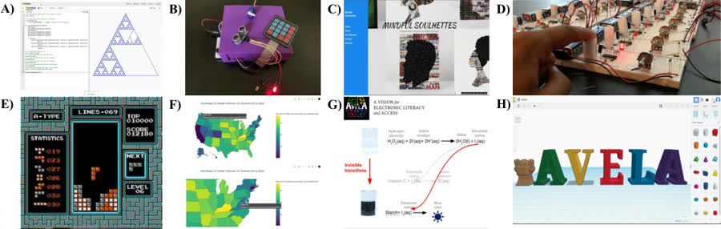
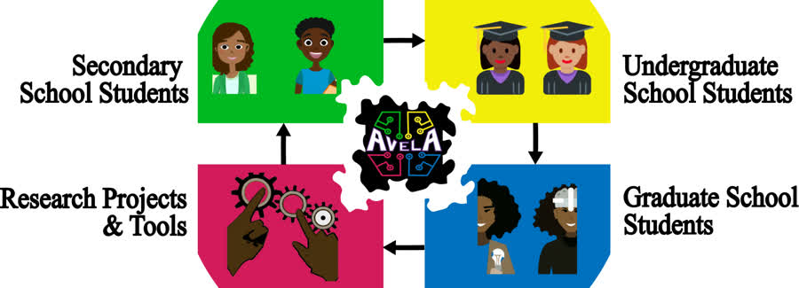
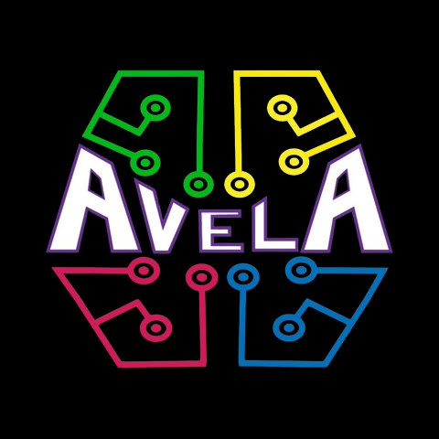

About
I'm a postdoctoral researcher in the Smart Sensing Systems (S4) Lab at Stanford, where I work with Prof. Zerina Kapetanovic.
I received my Ph.D. in Computer Science & Engineering from the University of Washington. I was advised by Vikram Iyer and also worked in Sawyer Fuller's Autonomous Insect Robotics Lab. I also earned my B.S. in Electrical & Computer Engineering at UW, where I worked on origami structures with Jinkyu Yang.
My research interests are low-power systems, small-scale robotics, computing for sustainability, and applied machine learning.
Research
Soft Robotics 9(5), 2022
Leaf-like Origami with Bistability for Self-Adaptive Grasping Motions
Recent papers
Battery-free Computer Vision on Insect-scale Microrobots
IEEE ICRA 2025, Late Breaking Results
Education research

WEEF & GEDC 2024
Scalable Community Mentorship: A Vision for Engineering Literacy & Access

arXiv 2024
AVELA, A Vision for Engineering Literacy & Access: Understanding Why Technology Alone Is Not Enough
WEEF & GEDC 2025
Tool or Toy? Student Views on ChatGPT in Culturally Responsive Computing Education: A Preliminary Study
Black Issues in Computing Education (BICE) 2024
Leveraging AI to Improve STEM Engagement for Black and Latine Youth
* Equal contribution. Full list on Google Scholar.
Awards & Patents
Fellowships
- Clean Energy Institute Graduate Fellowship 2023
- SPEEA ACE Fellowship 2023
- Washington NASA Space Grant Fellowship 2021–2024
- National GEM Consortium Fellowship 2021
Patents
- Coin-sized helicopter U.S. provisional, 2025
- Wireless microrobot WO 2025/058992 A1
- Flybar apparatus WO 2024/137785 A1

Outreach
AVELA: A Vision for Engineering Literacy & Access
I co-founded AVELA, a nonprofit that teaches STEM to Black, Latine and other underrepresented students in the Seattle area. I also serve as its board treasurer.
We run workshops, camps and mentoring programs with about 100 partner faculty, schools and community groups, including the City of Seattle, Seattle Public Schools, the Urban League and WA MESA. Our funding comes from Amazon Future Engineers, Apple, SPEEA and BECU.
Press
- Micro-pantries, big science and Ridwell is part of itRidwell Blog, 2026
- Self Powered Mini RobotUW CSE, December 2023
- Battery-free origami microfliers offer a new bio-inspired future of flying machinesUW CSE, September 2023
- These Tiny Sensors Ride the Wind Like Dandelion SeedsCNET
- Q&A: Making Earth-friendly electronicsUW News, April 2022